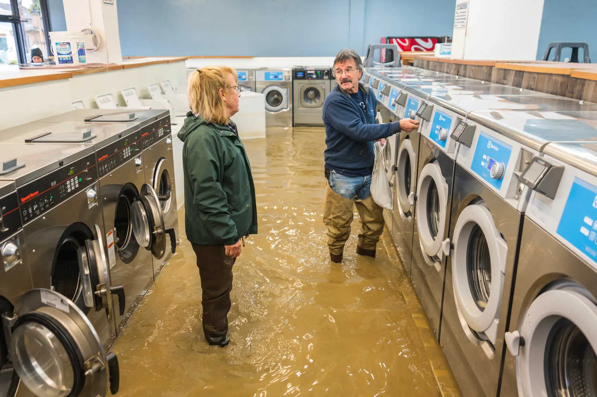

-
- After Days of Panic, Midsize Banks See Stocks Rise
- The specter of a billowing crisis over the banking industry appeared to ease, at least for the moment, as pressure lifted on midsize lenders.
- 4 MIN READ
- Analysis: As banking turmoil became a flash point in America’s culture wars, conservative presidential hopefuls pounced.
- 6 MIN READ
-

- The New York Times
-
- Caught Flat-Footed, a California Bank Sparked a Panic
- While its C.E.O. extolled innovation and the future of tech, Silicon Valley Bank paid less attention to risk management and was spurred by economic change.
- 8 MIN READ
-
- How Washington Decided to Come to the Rescue
- Officials were initially unsure about the need for the measures they eventually announced to shore up the financial system, but changed their minds quickly.
- 7 MIN READ
-
- Russian Warplane Hits American Drone Over Black Sea, U.S. Says
- The incident was the first known physical contact between the two militaries since the war in Ukraine began last year.
- 5 MIN READ
- As Russian Shelling Intensifies, True Liberation Eludes a Ukrainian City
- Months after Ukrainian forces pushed Russian occupiers out of Kherson, the city remains very much a war zone.
- 3 MIN READ
- John Moore/Getty Images
-
- The head of the Wagner mercenary force is preparing for a political advance in Russia.
- 6 MIN READ
-
- How Washington Decided to Come to the Rescue
- 5 MIN READ
-
- OpenAI Releases GPT-4, Months After Stunning Silicon Valley With ChatGPT
- The system will up the ante in the race to embrace artificial intelligence and decide who will be the next generation of leaders in the technology industry.
- 6 MIN READ
- 10 Ways GPT-4 Is Impressive but Still Flawed.
- OpenAI has improved the technology that powers its online chatbot in notable ways. It’s more accurate, but it still makes things up.
- 5 MIN READ
-
-
- At Wellesley College, a Fight Over Whether to Admit Trans Men
- Students will vote on a proposal to consider admitting all nonbinary and transgender applicants. Opponents say the school’s mission is to educate women.
- 5 MIN READ
-
- Bea Oyster for The New York Times
-
- Biden Issues Executive Order to Strengthen Background Checks for Guns
- President Biden announced minor steps designed to improve enforcement of existing gun laws during a trip to the site of a mass shooting in Monterey Park, Calif.
- 5 MIN READ
-
- Haiyun Jiang/The New York Times
-
- More Flooding Is Feared as Latest Storm Pummels California
- Another in a series of “atmospheric river” storms swept much of the state with strong winds, heavy rain at lower elevations and snow in the mountains.
- 3 MIN READ
- Track the latest atmospheric river to hit California.
- A storm dropped two feet of snow in parts of Massachusetts, while other cities in the Northeast saw flurries or rain.
- 4 MIN READ
-
- 
- Nic Coury for The New York Times
-
- Biden Issues Executive Order to Strengthen Background Checks for Guns
- President Biden announced minor steps designed to improve enforcement of existing gun laws during a trip to the site of a mass shooting in Monterey Park, Calif.
- 5 MIN READ
-
- Maggie Shannon for The New York Timed
Adam Amengual for The New York Times
The Lucas Museum Finds Your Lack of Faith Disturbing
George Lucas' billion-dollar Museum is finally coming into focus in Los Angeles. Officals say it should be fully operational by 2025.
5 MIN READ

A giant blob of seaweed is to Florida's beaches, where it will then begin to rot and emit toxic fumes.
3 MIN READ
This dress survived for more than three centuries at the bottom of the sea.
7 MIN READ
This Isn't What Middle Age Was Supposed to Look Like
14 MIN READ
Putin and Netanyahu Show Why Bad Things Happen to Bad Leaders
6 MIN READ
How to Make This the Last Banking Bailout
4 MIN READ
How Bad Was the Silicon Valley Bank Bailout?
5 MIN READ